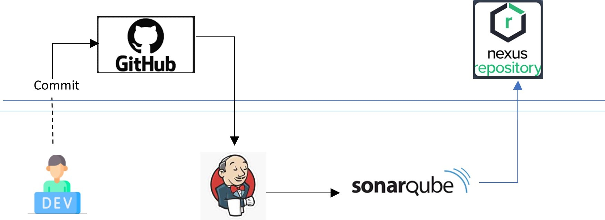
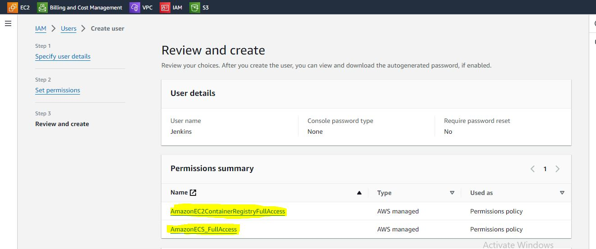
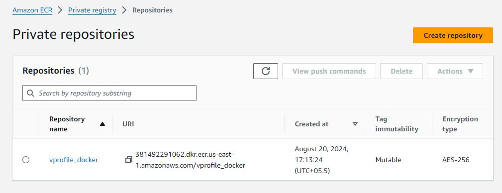
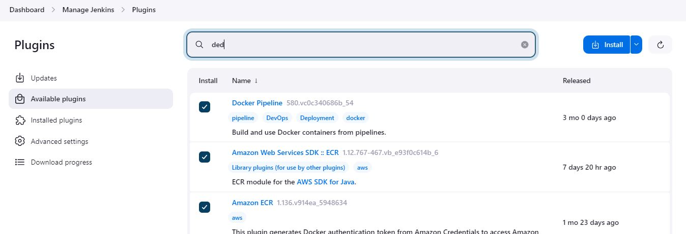
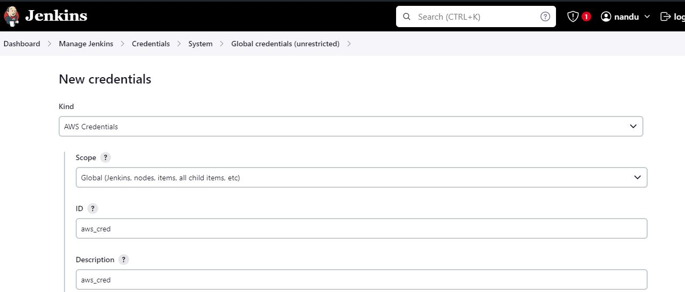
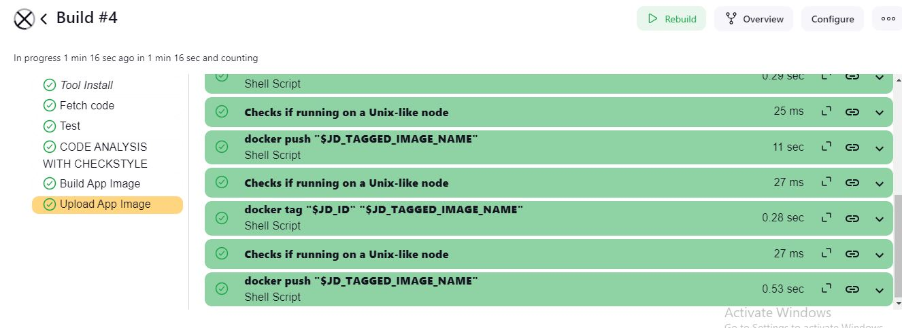

VProfile
Project Overview
When a developer pushes updated code to the Git master branch, the CI/CD pipeline automatically initiates the following processes: code checkout, compilation, testing, packaging, and containerization. The code undergoes testing with SonarQube, where a quality gate is configured with a bug threshold of 60. If the application does not pass this quality gate, the issue is flagged and communicated back to the developer. Once the application successfully passes all tests, it is uploaded to Nexus for further use.
The company’s goal is to deliver the product updates frequently to production automatically with High quality & Reliability. They also want to accelerate software delivery speed, quality and reducing feedback time between developers and testers.
Technologies Used
- Git - For version control for tracking changes in the code files
- Maven – For Continuous Build
- Jenkins - For continuous integration and continuous deployment
- Slack - Notification
- SonarQube - Configuration management tools
- ECR - for uploading docker image
My Role

Create an EC2 instance with below properties
Jenkins t2.medium | 8Gb RAM | Ubuntu 22.04 LTS
SonarQube t2.medium | 8Gb RAM | Ubuntu 22.04 LTS
Nexus3 t2.medium | 10Gb RAM | Cento OS 9/7
Setup Jenkins server
Install Java as a dependency
Visit www.jenkins.io to install Jenkins
sudo apt update
sudo apt install openjdk-17-jre -y
sudo wget -O /usr/share/keyrings/jenkins-keyring.asc \
https://pkg.jenkins.io/debian-stable/jenkins.io-2023.key
echo "deb [signed-by=/usr/share/keyrings/jenkins-keyring.asc]" \
https://pkg.jenkins.io/debian-stable binary/ | sudo tee \
/etc/apt/sources.list.d/jenkins.list > /dev/null
sudo apt-get update
sudo apt-get install jenkins -y

install git, maven & docker
sudo apt install git
sudo apt install maven -y
sudo apt install docker.io -y
sudo usermod -aG docker jenkins #restart Jenkins
Create IAM User
Create IAM user with below permission and then generate access key
- AmazonEC2ContainerRegistryFullAccess
- AmazonECS_FullAccess

Create ECR private repository
Navigate to AWS Management consol, search for "ECR". Click on create repository.

Create Jenkins Pipeline
Install below Jenkins plugins:
- Docker pipline
- Amazone ECR
- Amazone Web Service SDK :: ALL

Add aws credential on Jenkins
Dashboard --> Manage Jenkins --> Credentials --> System --> Global credentials (unrestricted)

Write Jenkins pipeline as shown below:
pipeline {
agent any
tools {
maven "MAVEN3"
}
environment {
registryCredential = 'ecr:us-east-1:aws_cred'
appRegistry = "381492291062.dkr.ecr.us-east-1.amazonaws.com/vprofile_docker"
vprofileRegistry = "https://381492291062.dkr.ecr.us-east-1.amazonaws.com"
}
stages {
stage('Fetch code'){
steps {
git branch: 'docker', url: 'https://github.com/devopshydclub/vprofile-project.git'
}
}
stage('Test'){
steps {
sh 'mvn test'
}
}
stage ('CODE ANALYSIS WITH CHECKSTYLE'){
steps {
sh 'mvn checkstyle:checkstyle'
}
post {
success {
echo 'Generated Analysis Result'
}
}
}
stage('Build App Image') {
steps {
script {
dockerImage = docker.build( appRegistry + ":$BUILD_NUMBER", "./Docker-files/app/multistage/")
}
}
}
stage('Upload App Image') {
steps{
script {
docker.withRegistry( vprofileRegistry, registryCredential ) {
dockerImage.push("$BUILD_NUMBER")
dockerImage.push('latest')
}
}
}
}
}
}
